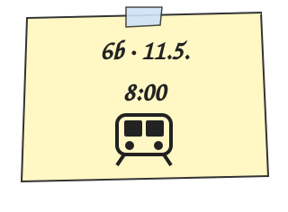
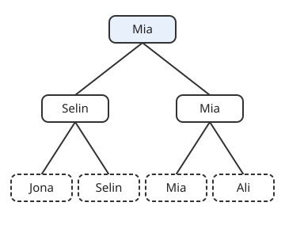
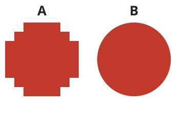

Media overview
All images, audio files and videos of this app with their source and licence.
Images

images/szene-zettel.svg© CC-BY-4.0Used on: Information and data

images/zettel.svg© CC-BY-4.0Used on: Information and data

images/abstimmung.svg© CC-BY-4.0Used on: Table, chart, text

images/baum-zimmer.svg© CC-BY-4.0Used on: The tree

images/turnier.svg© CC-BY-4.0Used on: The tree

images/szene-ampel.svg© CC-BY-4.0Used on: Codes in everyday life

images/bit-karten-13.svg© CC-BY-4.0Used on: The bit cards

images/bit-karten-22.svg© CC-BY-4.0Used on: The bit cards

images/byte-karten.svg© CC-BY-4.0Used on: Bits and bytes

images/szene-logo.svg© CC-BY-4.0Used on: Pictures made of pixels

images/zelt-pixel.svg© CC-BY-4.0Used on: Pictures made of pixels

images/vergroessern.svg© CC-BY-4.0Used on: Pixels or vectors?

images/szene-geheim.svg© CC-BY-4.0Used on: Secret writing

images/skytale.svg© CC-BY-4.0Used on: Secret writing